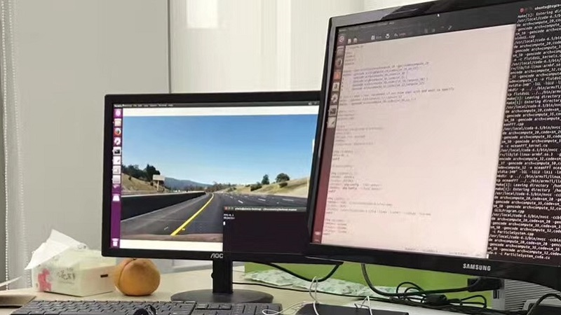

-
Student @ISSIS
- I am now studying at the Institute of Signal Space and Information System of Zhejiang University. My research focuses on speech signal processing and image processing.
- @ISSIS
-
Intern @Malu Innovation
- As a software and hardware intern, I run a object detection project and debug AGV robot.
- @Malu
-
Grand Prize @ERCC

- The China Education Robot Contest is a science and technology competition organized by the China Artificial Intelligence Society. I participated in the fifth competition organized by Southeast University and won the National Grand Prize. Our team's entry project is a palletizing robot with autonomous tracking and handling capabilities.
- @ERCC
-
Student @CRSN Lab
- As a member of the Nanchang University CRSN Lab. During that time, I led a provincial college student innovation and entrepreneurship project. The project was rated as an outstanding project at the end. Beside that, I participated in the China’s first "Internet Plus" innovation and entrepreneurship contest. In this project, I assist in the production of the product and the writing of the business plan. Our project stood out from 2,000 projects and ranked 13 in the final round. Besides,I participated in the provincial electronic design competition and won the third prize. Based on them, I have applied for several patents, two utility models have been authorized.
-
Volunteer @Qian Line

- As a member of the 3rd Nanchang University Qian Line Support Education Research Group, I went to Yaona Village, Jianhe County, Kaili City, Guizhou Province for a one-month education. Then, I stayed for one year as the propaganda department director of the group. In the meantime, I served as a volunteer for Beijing Qipule Education and gave senior students a one-semester innovative curriculum at the Nanchang Center Elementary School.

KOKO
Hey,Welcome!
I am a graduate student of ZJU.
My research focuses on signal processing.
This page will introduce me to you.
Contact Me zengweijun@zju.edu.cn